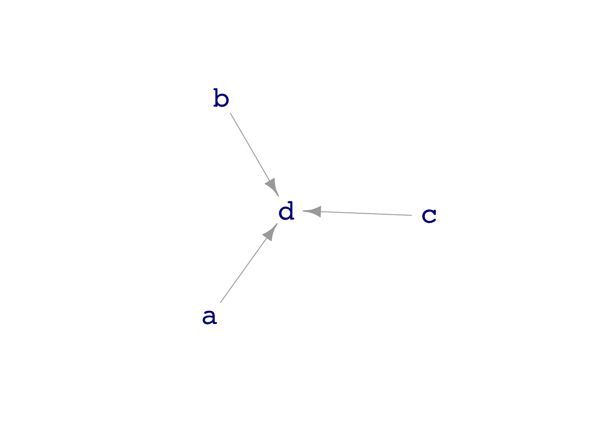
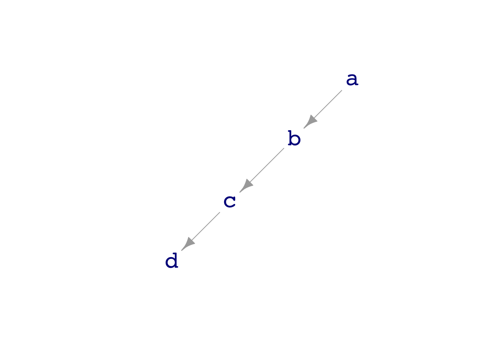
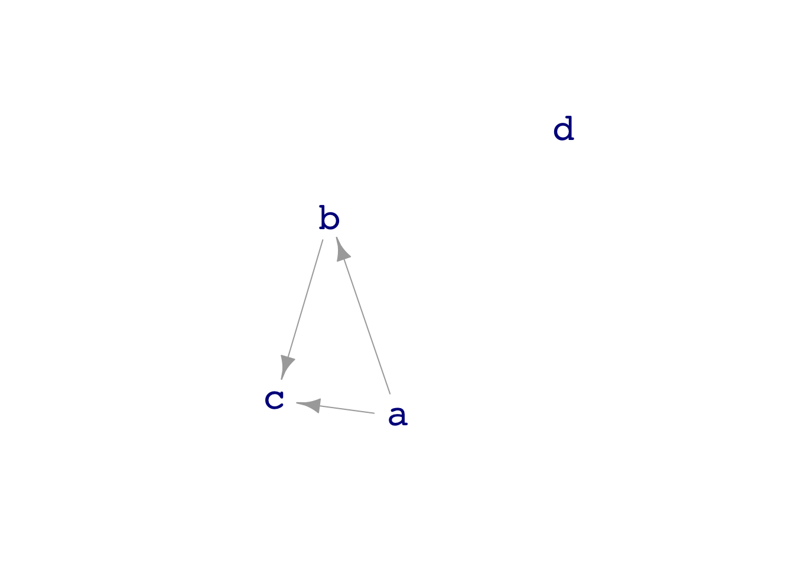
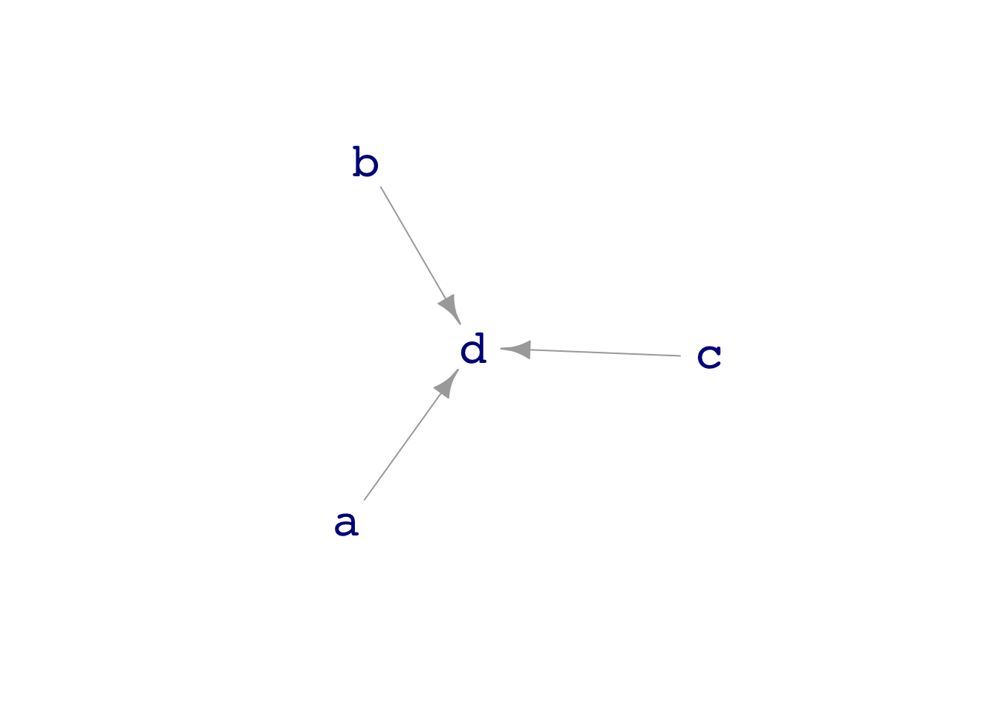
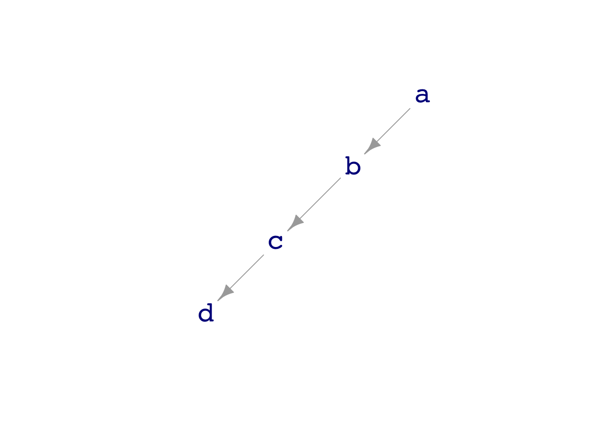
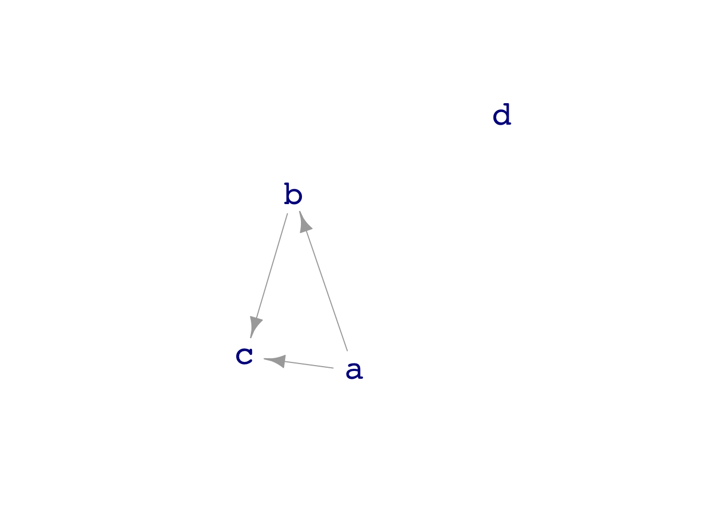

dag_draw(dag04)
dag_draw(dag05)
dag_draw(dag07)
Covariates eat variance
29.1 Correctly define “covariate”.
29.2 Understand why including covariates—even spurious ones—always improves the appearance of model performance in in-sample testing.
29.3 Read a DAG to anticipate when using spurious covariates will improve or will worsen model performance on out-of-sample prediction.
29.4 Calculate amount of in-sample mean square error reduction to be expected with a useless (random) covariate. (Residual sum of squares divided by residual degrees of freedom.)
TBD
Today, we’ll work mostly with in-sample modeling. This reflects the case in the real world, where you have a data set but not usually an easy way to collect more data for testing.1
Let’s work with dag04,dag05, and dag07 to illustrate some points about covariates.
dag_draw(dag04)
dag_draw(dag05)
dag_draw(dag07)
Start with dag04, where variables a, b, and c all contribute to the formation of d.
compare_model_residuals(dag04, d ~ c, d~ b + c, d ~ a + b + c, n=50)[1] 1.628050 1.375794 1.105072Prediction error gets smaller, the more covariates are included.
The situation can be different. In dag05, a, b, and c all contribute to d, but not separately. a and b communicate with d only via c. If c is in the model, a and b contribute nothing to reducing prediction error.
compare_model_residuals(dag05, d ~ c, d~ b + c, d ~ a + b + c, n=50)[1] 1.138071 1.132395 1.126588dag07 is a case where we have covariates, but they aren’t actually connected to d. Will they reduce prediction error? We’ll use a very small sample size, \(n=4\), to make the situation obvious.
compare_model_residuals(dag07, d ~ 1, d ~ c, d~ b + c, d ~ a + b + c, n=4)Warning in qt((1 - level)/2, df): NaNs produced[1] 1.387186 2.217092 3.216340 3.231776The `math300::Hill_racing” data frame records 2236 winning times (in seconds) in Scottish hill racing competitions. Consider this model of the winning time as a function of the race distance (km) and the total climb (meters):
mod <- lm(time ~ distance + climb, data=Hill_racing)The model_eval() function provides a convenient way to evaluate the model output (.output) for each of the rows in a data frame and, at the same time, calculates row-by-row residuals (.resid) and prediction errors (.lwr and .upr). Make sure to take not of the starting periods on the names.
model_eval(mod) %>% head() time distance climb .output .resid .lwr .upr
1 1630 6 240 1679.215 -49.21475 -29.56279 3387.992
2 1655 6 240 1679.215 -24.21475 -29.56279 3387.992
3 2391 6 240 1679.215 711.78525 -29.56279 3387.992
4 2351 6 240 1679.215 671.78525 -29.56279 3387.992
5 4151 14 660 4805.779 -654.77947 3097.10184 6514.457
6 3975 14 660 4805.779 -830.77947 3097.10184 6514.457The RMS residual from the model can be calculated this way:
model_eval(mod) %>%
summarize(rms = sqrt(mean(.resid^2))) rms
1 870.4631What are the units of the RMS residual?
Modify the calculation to compute the sum-of-square residuals. Report the result numerically. Be sure to say what are the units.
What are the units of the effect size on time with respect to climb?
What are the units of the effect size on time with respect to climb?
RMS residual has the same units as the response variable. In this case, that’s the time to run the race, with units “seconds.”
SS residual has units that are the square of the respond variable, in this case “square-seconds.”
Recall that the effect size on the response with respect to an explanatory variable has the units of the response variable divided by the units of the explanatory variable. The climb variable has units of meters, so the effect size has units “seconds/meters.”
seconds/km
Which of the following models are not nested within time ~ distance + climb?
time ~ 1time ~ distance + sextime ~ distancetime ~ climbThe model time ~ distance + sex is not nested in time ~ distance + climb.
Note that time ~ 1 is indeed nested in time ~ distance + climb. The 1 corresponds to the intercept.
In LC -Section 5 you calculated the RMS residuals and the sum-of-square residuals by wrangling the results from mod_eval(). That’s a perfectly good way to do things, but the work becomes tedious when there are multiple models you want to compare.
For convenience, there is a compare_model_residuals() command, which can calculate the RMS residual or sum-of-square residual for each of a set of models. All the models must have the same response variable.
Hill_racing %>%
compare_model_residuals(time ~ 1,
time ~ distance + climb,
time ~ distance + climb + sex,
time ~ distance,
measure = "RMS"
)[1] 3122.4821 870.4631 775.2962 1189.7148It happens that all of the models in the command are a nested set. Re-order the models so that each model nests inside the following model, that is, from smaller model to bigger model.
Do the RMS residuals for the nested models increase or decrease when moving from a smaller model to a larger model?
You can calculate the sum-of-square residual by using the argument measure="SS". Do the sum-of-square residuals for the nested models increas or decrease when moving from a smaller model to a larger model.
You can calculate R2 by using the argument measure="R2". Do the R2 for the nested models increase or decrease when moving from a smaller model to a larger model.
::: {.callout-warning} ## Still a draft
Look at dag07. Notice that d is not connected to any of the other variables.
Generate a sample of size \(n=6\). Compare the sum of square residual (in sample) from the nested models c ~ 1, c ~ a c ~ a + b, and c ~ a + b + d. (Use the compare_model_residuals() using the argument method="SS".
Which, if any, of the variables a, b, or d reduces the in-sample sum-of-squared residuals compared to the previous model.
compare_model_residuals(dag07, c ~ 1, c ~ a, c ~ a + b, c ~ a + b + d,
n=6, measure="R2")[1] 0.000000 4.123805 5.041728 3.817478Out of sample, the useless covariate often increases the SS error.
In dag04, build models to predict c from the other variables. Does one of those variables “block” the others?
compare_model_residuals(dag04, c~ 1, c ~ d, c~ b + d, c ~ a + b + d, n=50)[1] 0.9584840 0.8647784 0.7687133 0.7156887d seems to block effect of a and b on c.
compare_model_residuals(dag04, c~ 1, c ~ d, c~ b + d, c ~ a + b + d, n=5)[1] 0.5045527 0.9949466 1.2849421 1.3575294We are using in-sample testing because that is often the case in the model-building stage. However, in the model-using stage, things are different. You will be making predictions of new cases, that is, out-of-sample.
For out-of-sample, when working with new data, it’s not just a matter of being tricked into thinking covariates are useful when they’re not. Using irrelevant covariates can be genuinely harmful to the predictions.
Compare these in-sample and out-of-sample results.
set.seed(101)
compare_model_residuals(dag07, d ~ 1, d ~ c, d~ b + c, d ~ a + b + c, n=4)Warning in qt((1 - level)/2, df): NaNs produced[1] 0.965495 1.434434 1.641881 1.591050set.seed(101)
compare_model_residuals(dag07, d ~ 1, d ~ c, d~ b + c, d ~ a + b + c, n=4,
testing = "out-of-sample")Warning in qt((1 - level)/2, df): NaNs produced[1] 0.965495 1.434434 1.641881 1.591050What do you see in the results that tells you that incorporating irrelevant covariates hurts the out-of-sample predictions?
openintro::teacher. What’s the base pay difference between a teacher with an MA and a BA degree? What’s a confidence interval on this effect size? How does the confidence interval change if you include years as a covariate.
openintro::census Predict log personal income based on other variables. Eat variance using the total_family_income variable.
mod <- lm(log10(total_personal_income) ~ log10(age) + sex + marital_status + log10(total_family_income), data = openintro::census %>% filter(total_personal_income > 0, total_family_income > 0))
anova(mod)Analysis of Variance Table
Response: log10(total_personal_income)
Df Sum Sq Mean Sq F value Pr(>F)
log10(age) 1 5.938 5.9383 35.6102 6.660e-09 ***
sex 1 5.976 5.9758 35.8351 6.006e-09 ***
marital_status 5 4.302 0.8604 5.1596 0.0001464 ***
log10(total_family_income) 1 17.620 17.6198 105.6615 < 2.2e-16 ***
Residuals 306 51.028 0.1668
---
Signif. codes: 0 '***' 0.001 '**' 0.01 '*' 0.05 '.' 0.1 ' ' 1gf_jitter(total_personal_income ~ total_family_income | sex,
data =openintro::census %>% filter(total_personal_income > 3000),
color=~marital_status, alpha=0.3) %>%
gf_refine(scale_y_log10(), scale_x_log10())Warning: Transformation introduced infinite values in continuous x-axisWarning: Removed 20 rows containing missing values (geom_point).
openintro::starbucks where do the calories come from? Find effect size of, say, protein on calories. Then see what happens if you use carbohydrates as a covariate.
::: {.cell}
```{.r .cell-code}
lm( calories ~ protein, data = openintro::starbucks) %>% confint() 2.5 % 97.5 %
(Intercept) 254.107446 322.072380
protein 2.616542 8.087778lm( calories ~ fat + carb + fiber + protein, data = openintro::starbucks) %>% confint() 2.5 % 97.5 %
(Intercept) -2.938079 13.605279
fat 8.591250 9.315766
carb 3.686593 3.997527
fiber -1.418966 1.370022
protein 3.631695 4.364091There is a technique that let’s you get many of the benefits of out-of-sample testing with only one dataset. It’s called cross-validation. Perhaps later in the course, but we have bigger fish to fry right now.↩︎
In draft
Maybe come back to this in confounding lesson. Look for components that tend to go together